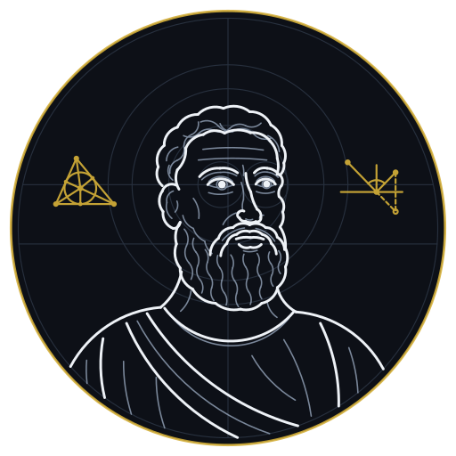

Heron of Alexandria¶

Heron of Alexandria (fl. c. 60 CE) bridged classical Euclidean rigor with practical mensuration, geodesy, and mathematical physics. This archive brings together his four foundational treatises—Metrica, Definitions, Catoptrics, and On the Dioptra—in synchronized English and Greek tracks paired with calibrated vector diagrams and exact symbolic demonstrations.
Works in This Archive¶
Schöne Edition · 1903 · 3 Books · 82 Propositions
Metrica (*Μετρικά*) — Heron’s three-book masterwork on the measurement of plane figures, stereometric surfaces and volumes (including Dionysodorus’s torus), and exact proportional area division—featuring his incircle proof of the triangle area formula and iterative square-root approximations.
Hultsch 1864 & Heiberg 1912 · 133 Definitions · Universal Gnomon
Definitions (*Ὅροι τῶν γεωμετρίας ὀνομάτων*) — A philosophical primer enriching Euclid’s static boundaries with kinematic generation, rigid-motion symmetry, and the Universal Gnomon linking arithmetic sequences, squares, and golden-ratio scaling.
Schmidt Edition · 1900 · Variational Optics
Catoptrics (*Κατοπτρικά / De speculis*) — Formulates the earliest variational principle in mathematical physics, deducing the law of equal reflection angles from the postulate that nature acts along the shortest path.
Schöne Edition · 1903 · Geodesy & Instrumentation
On the Dioptra (*Περὶ διόπτρας*) — Describes the ancient precision sighting instrument and its application to surveying, astronomical alignment, and excavating a straight tunnel simultaneously from opposite sides of a mountain.
Key Features¶
Four-Track Bilingual Codex
Read every treatise with synchronized English, critical Greek (Schöne, Hultsch, Heiberg, Schmidt), Summary, and primary-source Notes tracks linked directly to archival folios.
Exact Symbolic Constructions
Explore 100% exact SymPy and geometor.model derivations of Heron’s formula, \(\sqrt{720}\) convergents, shortest-path reflection, Book III area division, and dioptra surveying in Symbolic Demos.
7 Calibrated Vector Plates
Interactive SVG constructions connect proof labels, rational-trigonometry invariants, and geometric loci across the Metrica, Definitions, Catoptrics, and Dioptra.
Reference & Project¶
Scholarly Apparatus
People — Heron, Archimedes, Dionysodorus, Olympiodorus, Moerbeke, Schöne, Hultsch, Heiberg, and Schmidt
Concordance & Bibliography — Folio-to-proposition concordance and critical sources
Glossary — Key Greek mensuration, optical, and geodetic terms
About This Project
About — Scope, sources, and editorial methodology
Using This Edition — Reading guide, track switching, and diagram controls
Symbolic Demos & Changelog — Executable Python demonstrations and release notes